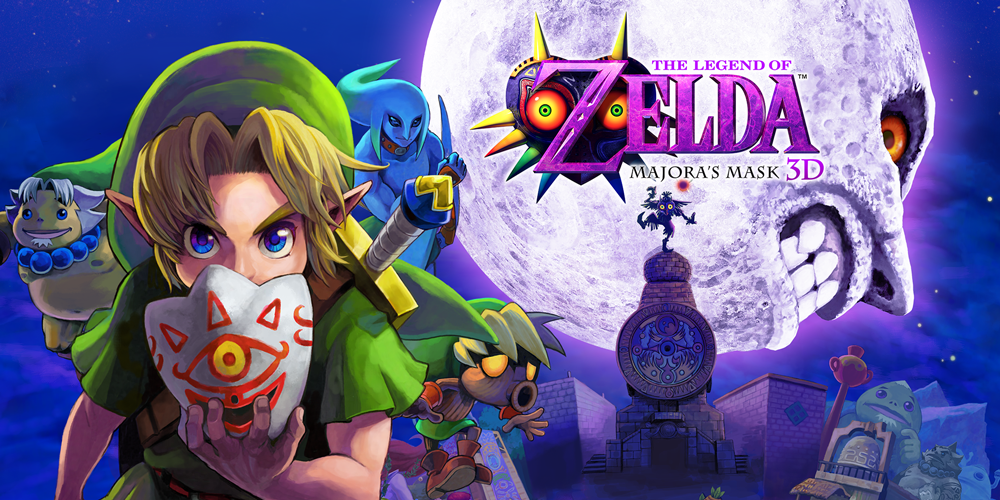

A História do The Legend of Zelda Majora's Mask 3D
imagem do jogo The Legend of Zelda Majora's Mask 3D
Bom, vou começar falando sobre esse hack maravilhoso, como vocês já sabem eu acho que em 1991 a Nintendo lançou o A Link to the Past para snes, então quando você zerou sentiu vontade de jogar denovo? Então como todos aqui já sabemos eu irei falar nesse post somente sobre esse Zelda de snes. Em 2006 uma galera fez esse hack de Zelda e enfim.
Para começar vou falar sobre os gráficos que são inovadores ! Ele possuí vários gráficos novos, vários gráficos antigos arrumados como o Link, lembra que ele tinha um cabelo rosa? Então, nesse jogo eles arrumaram os gráficos, agora Link possuí cabelos loiros e os inimigos tem novos gráficos também como vocês podem ver o chuchu na imagen ao lado, muito melhor e o melhor de tudo é que mesmo com esses novos gráficos, eles ainda deixão você com aquela sensação de estar de volta no tempo (ataque nostálgico), tá jogando Alttp novamente =D e como todos os gráficos foram modificados (como falei logo acima), agora esta muito mais dificil você se perder pois agora .
jogo possuí uma tela no canto inferior da tela que mostra onde você esta tipo, você vai para Kakariko Village e não sabe o nome da cidade? Então basta você olhar no canto inferior da tela e com isso saberá qual o nome do local onde você está, mas agora vamos deixar os gráficos de lado e falar um pouco sobre a história desse jogo, eu mau comecei a joga-lo, mas até onde eu entendi, o jogo começa num dia chuvoso, Link esta dormindo (igual Alttp), quando aparece os pensamentos dizendo que o Tyranon (acho que o nome era esse) esta tomando conta do Parallel Tower e com isso ele esta com a princesa Zelda presa dentro do castelo, então o tio de link decidi.
O produtor da série Legend of Zelda, Eiji Aonuma, e os co-desenvolvedores Grezzo iniciaram o desenvolvimento do Majora's Mask 3D imediatamente após o lançamento de Ocarina of Time 3D, em junho de 2011, depois de ser sugerido a fazê-lo por Shigeru Miyamoto. [7] O projeto em si, no entanto, foi colocado em segredo para a maior parte de seu desenvolvimento, com Aonuma e outros envolvidos com seu desenvolvimento não confirmando nem negando a existência do jogo, mas sim, sugerindo que um remake de Máscara de Majora não era "uma impossibilidade", dependendo do interesse e da demanda. Durante o desenvolvimento, Aonuma jogou através da versão original de Majora's Mask, desta vez mantendo uma lista de coisas que seriam ajustadas no remake. Isso ficou coloquialmente conhecido como a lista "o que no mundo", composta por momentos que o colocaram como irracional e alienante para os jogadores. Após o primeiro rascunho, a lista foi passada para a equipe da Grezzo, que atualizava regularmente a lista com momentos de suas próprias experiências com a versão nintendo 64. Ele acredita que o remake parece menos implacável do que o original como resultado.